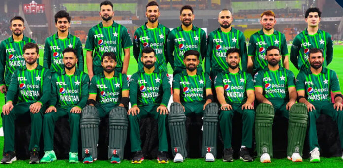
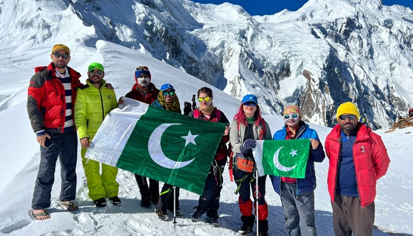
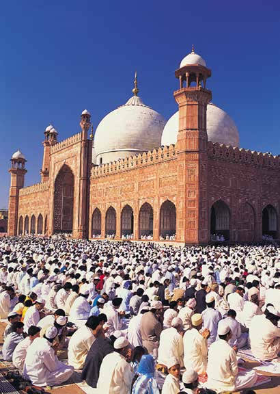
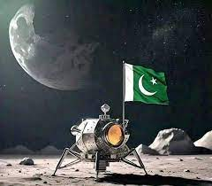
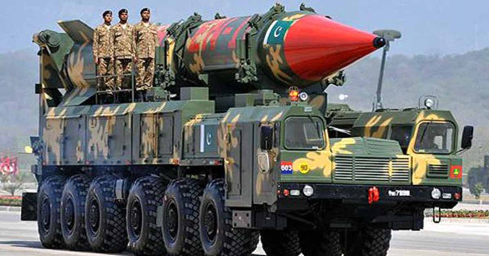
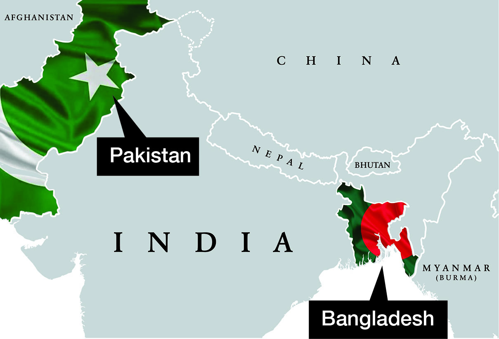
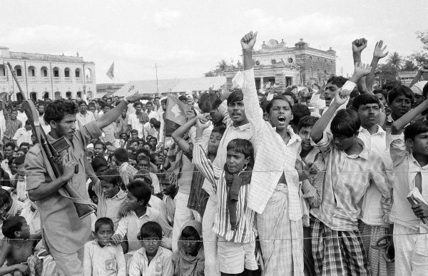

Founding of Pakistan
Historical Context
British India: Before 1947, present-day India, Pakistan, and Bangladesh were part of British India, a large colony ruled by the British Empire.
Muslim Identity: The All-India Muslim League, led by Muhammad Ali Jinnah, advocated for the rights of Muslims in India. Muslims felt underrepresented and feared domination by the Hindu majority in an independent India.
Demand for a Separate State
Muhammad Ali Jinnah: The leader of the All-India Muslim League and the primary architect of Pakistan. Known as the "Quaid-e-Azam" (Great Leader), Jinnah played a crucial role in the creation of Pakistan.
Allama Iqbal: A philosopher and poet, Iqbal envisioned a separate Muslim state and influenced the ideological foundation of Pakistan.
Partition of British India
Early Development
Pakistan's Unity and Early Development
Unity and Nation-Building
Diverse Population: At its inception, Pakistan comprised various ethnic, linguistic, and religious groups, including Punjabis, Sindhis, Baloch, Pashtuns, and Bengalis (in East Pakistan).
Islam as a Unifying Factor: The founding leaders emphasized Islam as the key unifying factor to bring together the diverse population. Muhammad Ali Jinnah, in his speeches, often highlighted the principles of equality, justice, and fraternity as enshrined in Islamic teachings.
Challenges to Unity
Geographical Disparity: The new nation was geographically divided into West Pakistan and East Pakistan (now Bangladesh), separated by about 1,600 kilometers of Indian territory. This geographical separation posed significant administrative and logistical challenges.
Linguistic and Cultural Differences: The linguistic and cultural differences between East and West Pakistan, particularly the imposition of Urdu as the national language, led to discontent in East Pakistan, where Bengali was the predominant language.
Early Development Initiatives
Establishing Governance Structures: The early years focused on building the basic administrative and governance structures. Karachi was chosen as the capital, and efforts were made to set up government institutions and public services.
Constitutional Development:
Objective Resolution (1949): The Objective Resolution, passed in 1949, laid down the guiding principles for the future constitution of Pakistan, emphasizing democracy, freedom, equality, and social justice.
First Constitution (1956): The first constitution of Pakistan was adopted in 1956, declaring Pakistan an Islamic Republic and laying the framework for governance.
Economic Development
Agricultural Reforms: As an agrarian economy, initial efforts focused on land reforms to redistribute land from large landowners to landless peasants and improve agricultural productivity.
Industrialization: The government initiated policies to promote industrialization, including setting up industrial zones and providing incentives for private investment in manufacturing and industry.
Five-Year Plans: The introduction of Five-Year Plans aimed at systematic economic planning and development. The first plan (1955-1960) focused on improving infrastructure, industrial growth, and education.
Infrastructure Development


Islamic Influence on Pakistan's Development
The Role of Islam in Shaping the Nation
Islamic Influence on Governance and Law
Islamic Principles: The foundational principles of Pakistan were heavily influenced by Islamic teachings, which emphasized justice, equality, and social welfare. The country s legal and political systems were designed to incorporate Islamic values while adapting to modern governance needs.
Sharia Law: Early on, the Pakistani government sought to incorporate elements of Sharia (Islamic law) into the legal framework. This included aspects related to family law, inheritance, and personal status.
Islamic Ideology and Education
Religious Education: Islamic education has played a significant role in Pakistan s education system. The government supported the establishment of madrasas (Islamic schools) alongside secular institutions.
Curriculum: The incorporation of Islamic studies in the school curriculum aimed to promote Islamic values and history among students, fostering a sense of national identity rooted in religious heritage.
Social and Cultural Impact
Social Welfare Programs: Islamic principles of charity and social welfare influenced the creation of various social welfare programs, including zakat (charitable giving) and other community support initiatives.
Cultural Norms: Islamic cultural norms and traditions have shaped social practices, including dress codes, dietary restrictions, and public behavior, reflecting the country s religious identity.
Challenges and Debates
Impact on Foreign Policy
Relations with Islamic Countries: Pakistan s Islamic identity has influenced its foreign policy, particularly in relations with other Muslim-majority countries. This has included cooperation on Islamic issues and participation in international Islamic organizations.
Global Islamic Movements: The country s stance on global Islamic movements and issues has been shaped by its religious identity, impacting its international diplomacy and relations with various global actors.
The Islamic influence on Pakistan s development has been profound, shaping its governance, education, social norms, and foreign policy. While incorporating Islamic values has been a key aspect of national identity, it has also led to complex discussions and debates on balancing tradition with modernity. The integration of Islamic principles into various aspects of society reflects the country s commitment to its religious heritage while navigating the challenges of contemporary governance and global interactions.

Significant Achievements of Pakistan
Scientific and Technological Advancements
Space Program
Pakistan's space program, initiated in the 1960s, led to the successful launch of the country's first satellite, "Badr-A," into space in 1990. This achievement demonstrated Pakistan's growing capabilities in space technology and satellite communication.
Nuclear Program
Pakistan conducted its first successful nuclear tests on May 28, 1998, becoming the seventh nation in the world to possess nuclear weapons. This milestone established Pakistan as a key player in global security and nuclear policy.
IT and Telecom Sector
The growth of Pakistan's IT and telecom sector has been notable, with the establishment of numerous tech startups and advancements in telecommunications infrastructure. The country has seen significant improvements in internet connectivity and digital services.
Sports Achievements
Cricket
Cricket is a major sport in Pakistan, and the national team has achieved notable success, including winning the ICC Cricket World Cup in 1992. Pakistan has also won the ICC T20 World Cup in 2009, demonstrating its strong position in international cricket.
Hockey
Pakistan's field hockey team has a rich history of success, including winning several Olympic gold medals and World Cups. The team's achievements have contributed to Pakistan's reputation as a prominent force in international hockey.
Social and Cultural Contributions
Literature and Arts
Pakistani literature and arts have gained international recognition, with notable authors, poets, and artists contributing to global cultural dialogue. Figures such as Faiz Ahmed Faiz, Ahmed Ali, and Iqbal Bano have made significant contributions to literature and music.
Film Industry
The revival of the Pakistani film industry, known as "Lollywood," has led to the production of critically acclaimed films and increased international exposure. Pakistani cinema has received recognition for its storytelling and artistic achievements.
Economic Development
Industrial Growth
Pakistan has seen growth in various industrial sectors, including textiles, cement, and pharmaceuticals. The development of industrial zones and economic policies has contributed to job creation and economic stability.
Infrastructure Projects
Major infrastructure projects, including the development of Gwadar Port, highways, and energy projects, have played a crucial role in boosting economic growth and connectivity within the region.
Humanitarian Efforts
Disaster Relief and Assistance
Pakistan has actively participated in disaster relief efforts, both domestically and internationally. The country has provided aid and support during natural disasters, including earthquakes, floods, and humanitarian crises.
Development Programs
Various development programs have focused on improving education, healthcare, and poverty alleviation. Initiatives such as microfinance programs and social welfare schemes have aimed to uplift marginalized communities.
Despite facing challenges, Pakistan has achieved significant milestones in various fields, including science and technology, sports, culture, and economic development. These accomplishments reflect the resilience and potential of the nation and contribute to its evolving global presence.


Conflicts and Resolutions
Internal Conflicts
Ethnic and Political Strife
The early years of Pakistan were marked by ethnic and political conflicts, particularly between the Punjabi-dominated West Pakistan and the Bengali-majority East Pakistan. Tensions over language, political representation, and economic disparities contributed to internal strife.
The Bangladesh Liberation War (1971)
East Pakistan's demand for autonomy and the growing unrest led to the Bangladesh Liberation War in 1971. The conflict culminated in the independence of Bangladesh and the secession of East Pakistan, marking a significant turning point in Pakistan's history.
Sectarian Violence
Sectarian violence has been a recurring issue in Pakistan, with conflicts between different religious sects, including Sunni and Shia Muslims. Efforts to address sectarian tensions and promote interfaith harmony have been ongoing.
Political Instability
Military Coups
Pakistan experienced several military coups, with the military taking control of the government in 1958, 1977, and 1999. These coups led to periods of military rule, impacting the political landscape and democratic processes.
Democratic Transitions
The transition to democratic governance has been marked by challenges, including political corruption, weak institutions, and intermittent military interventions. Despite these challenges, Pakistan has made progress in establishing democratic norms and practices.
External Conflicts
India-Pakistan Relations
The relationship between India and Pakistan has been characterized by periods of tension and conflict, including the Kashmir dispute and several wars (1947-48, 1965, and 1999). Efforts at peace and dialogue have been intermittent, with ongoing efforts to address bilateral issues.
Afghanistan and Border Issues
Pakistan's involvement in the Afghan conflict and border issues with Afghanistan have been sources of tension. The rise of militancy and cross-border insurgency have posed challenges to regional stability and security.
Peace Initiatives and Resolutions
Diplomatic Efforts
Various diplomatic efforts have been made to address conflicts and promote peace, including negotiations, treaties, and dialogue initiatives. The Simla Agreement (1972) and various rounds of talks have aimed at resolving bilateral issues with India.
Counterterrorism Measures
Pakistan has undertaken counterterrorism measures to address security challenges posed by militant groups. Efforts include military operations, intelligence coordination, and international cooperation to combat terrorism.
The resolution of conflicts and internal strife has been a complex and ongoing process for Pakistan. While challenges remain, efforts to address political, ethnic, and sectarian issues, as well as external conflicts, continue to shape the nation's path towards stability and peace.
The Bangladesh Liberation War (1971)


Pakistan's Super Heroes
We honor our national heroes like Dr. Abdul Qadeer Khan, Dr. Abdus Salam, Quaid-e-Azam Muhammad Ali Jinnah, and Allama Iqbal for their extraordinary contributions. Their dedication and vision have shaped our nation and continue to inspire us. Let their legacy motivate us to work tirelessly for a stronger Pakistan. Together, we can achieve greatness and uphold their values.